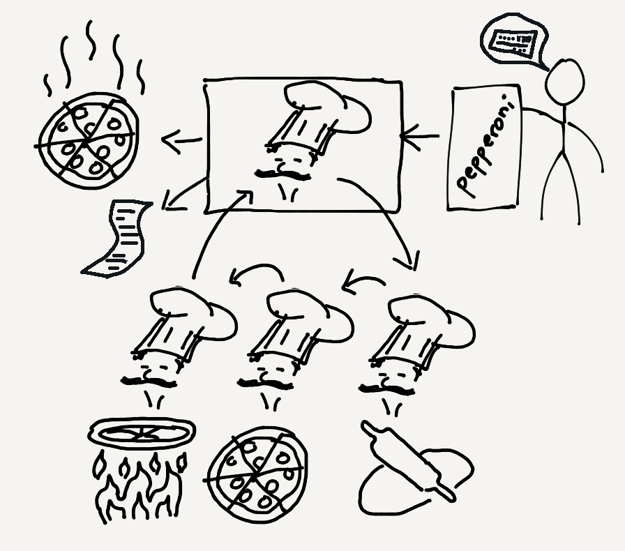
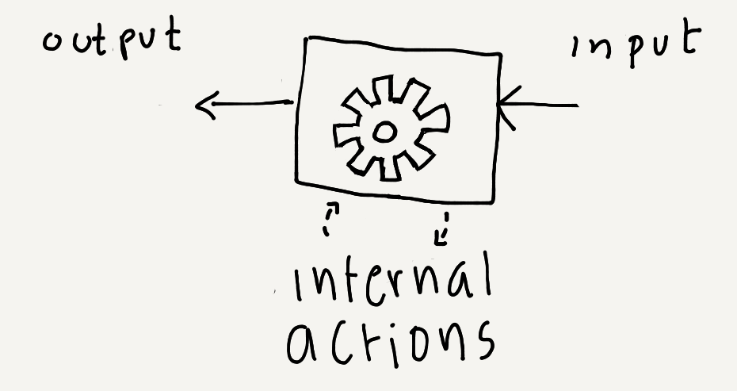
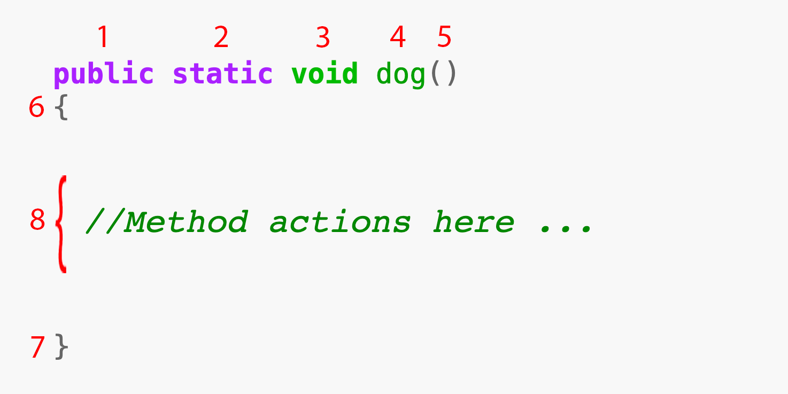
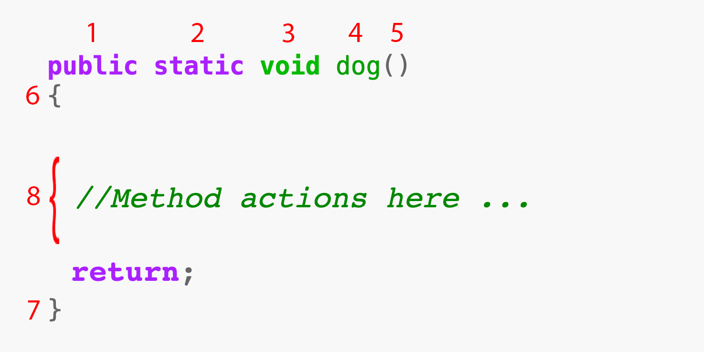

CS 1111
Introduction to Software Development
GWU Computer Science
Introduction to Software Development
GWU Computer Science
If you do not have your Codio course ready, use any text editor or simple IDE. Some possibilities are:
Remember our pizzeria example?
Here, the idea is that once the black box is constructed, you only need to know what to feed it and what to expect as a result.
In this example, the input to the store is the sentence: "one large pepperoni pizza", and your credit card info. The expected outputs are the actual pie and a receipt.

In this analogy, we have one pizzeria with four behaviors:
If this were a Java program, the class would represent the pizzeria, and each one of the behaviors would be a different method.
Crucially, there is an initial point of entry(the cashier) to call other behaviors.
In Java, that would be the main method, and it represents the initial point of execution.
The main rule: There needs to be one method called main where execution may start. Note that this is the case when you want to execute the class. There is a way of using a class without executing it directly. We'll talk about that at a later time.
Activity 1: You'll be assigned to a Breakout group. Choose one of the following every-day services and imagine it is a Java class (no need for actual code, just high-level discussion).
Pick one from:
Discuss:
The path of execution refers to the sequence of instructions that gets executed.
As we'll see, this can be single statements that do something small, or it can ask another behavior to do its thing (asking another behavior to initiate is called invoking it).
Example: invoking a method is like the cashier asking the dough-chef to prep the dough for a large pie!
As in the pizzeria sketch above, we only execute a behavior if we ask it to run. That is, unless we Invoke it!
Behaviors need to be specified before they are executed. That is, we need to write the instructions for each behavior so that when we want to use them, Java knows what to do.
Writing the Method Declaration: The act of specifying the inputs, outputs, and actions for executing a method.
Before now, the only method you had seen was the main method. At this point, we will introduce three other methods, called upright and upDog, and downDog, and explain how to declare them to Java.
The class Yoga is like a your good old friend HelloWorld class, except it has three additional method declarations.
1 2 3 4 5 6 7 8 9 10 11 12 13 14 15 16 17 18 19 20 21 22 23 24 25 26 27 28 29 30 31 32 33 34 35 36 37 38 39 40 41 | public class Yoga { public static void main(String args[]) { //This is the classical action in main System.out.println ("Hello, World!"); } //Additional methods below: public static void upright() { System.out.println (" \\\\"); System.out.println (" O))"); System.out.println (" |"); System.out.println (" |"); System.out.println (" \\\\"); System.out.println (" \\\\"); System.out.println (" //"); System.out.println (" //"); System.out.println (" ``"); } public static void upDog() { System.out.println (" O"); System.out.println (" _/|"); System.out.println (" ,----===√√ |"); System.out.println (" `"); } public static void downDog() { System.out.println (" _"); System.out.println (" //\\\\"); System.out.println (" // O\\"); System.out.println (" || \\\\"); System.out.println (" // \\\\"); System.out.println (" `` ``"); } } |
Activity 2: What will happen if this is executed?
In this case, it will simply print "Hello, World!" as always.
Why? Because even though we Declared the methods, we never actually asked java to Run(execute) them! That is... we never Invoked them.
The Path of execution ONLY goes through line number 6 and then execution ends since we reach the end of the main (line number 7).
let's try it out:
Click Here to go to the Java visualizerInvoking a Method: The act of calling the method by name from a point that is in the path of execution.
In the above example, the path of execution ran through line 6 and ended when reaching the end of the main. In the following example, we are actually invoking the extra methods in the path of execution.
1 2 3 4 5 6 7 8 9 10 11 12 13 14 15 16 17 18 19 20 21 22 23 24 25 26 27 28 29 30 31 32 33 34 35 36 37 38 39 40 41 | public class Yoga { public static void main(String args[]) { //Sun Salutation up(); plank(); dog(); } public static void up() { System.out.println (" \\\\"); System.out.println (" O))"); System.out.println (" |"); System.out.println (" |"); System.out.println (" \\\\"); System.out.println (" \\\\"); System.out.println (" //"); System.out.println (" //"); System.out.println (" ``"); } public static void plank() { System.out.println (" O"); System.out.println (" _/|"); System.out.println (" ,----===// |"); System.out.println (" `"); } public static void dog() { System.out.println (" _"); System.out.println (" //\\\\"); System.out.println (" // O\\"); System.out.println (" || \\\\"); System.out.println (" // \\\\"); System.out.println (" `` ``"); } } |
In this example, when the path of execution reaches line 6, a method call or invocation causes the method up() to be immediatelly executed. After it ends, the execution path returns to the point where it left (right after line 6) and continues to line 7. The same happens for lines 7 and 8.
Activity 3:[BBUltra Poll] What is the line number for the third statement to get executed?
Short answer: Anywhere. Longer answer: Anywhere as long as Java knows what you are invoking and you have indicated that it has permission to be invoked from there (We'll talk more about this much later so don't worry 'bout it for now).
Two Invocation approaches:
However!!! Consider this weird situation:
Let's say you have a main and two methods: methodA and methodB.
Now imagine that inside methodA we invoke methodB, and inside methodB we invoke methodA.
What happens if we invoke either method from the main?
The method we have seen so far don;t require any inputs or outputs. That is, they don't need any additional parameters to work and do their thing without returning anything after being invoked. Note that they do something (they print stuff, in this case), they just do not return anything.
Example: methods that do not need inputs and that do not emit outputs are like a hotel's wake-up call. That is, at some point during the path of execution of a hotel clerk, it notices it is supposed to call your room (in this case, the method is callRoom101).
The moment they hear the busy tone end, they hang up without having to say a word and without waiting for you to say a word.
Why? because it has already succeeded in waking you!
A method is like a black box where we indicate inputs on one side and outputs on the other.

In terms of reading and writing a method with no inputs or outputs, these are the important parts:

You can even specify the moment you wish to end execution and return from the method. But this is optional in methods with no outputs.

Java will complain if you have unreachable code, though (like if you have a print statement after the "return").
Tracing refers to the act of following along the path of execution.
Mental Tracing: The act of mentally tracking the set of actions that occur, usually to attempt to predict the outcome of an execution or to fond a possible bug.
Tool-Assisted Tracing: Using software that allows you to slowly execute the code and to keep track of all its moving parts.
Let's try both!
Activity 4: You'll be assigned to a Breakout group. Study the following code and predict what will happen using Mental Execution Only
Part 1:
/* File name : NaNaSongs.java Tribute to https://xkcd.com/851/ */ public class NaNaSongs { public static void main(String args[]) { //Predict the output longNa(); hey(); hey(); hey(); bye(); } public static void longNa() { na4(); na4(); } public static void shortNa() { System.out.print ("NA "); } public static void na3() { System.out.print ("NA NA NA "); } public static void na4() { System.out.print ("NA NA NA NA "); } public static void hey() { System.out.print ("HEY "); } public static void bye() { System.out.print ("GOOOD-BYEEE!\n"); } public static void bat() { System.out.print ("BAT-MAAAN!\n"); } public static void jude() { System.out.print ("JUUDE!\n"); } }
Is this what you got?
As you can see here, there are a LOT of na-na lyrics you could build with this code.
Part 2: What would you get if the main was, instead:
public static void main(String args[]) { //Predict the output #2 longNa(); na3(); hey(); jude(); }
Is this what you got? (watch out.. might be loud)
Part 3: Now, how would you build this one?
Bugs are prieces of code that, whicle correctly written, have undesired effects. Also, sometimes, bugs are just bugs.
The art of debugging is one of discipline, patience, and honor! One must develop programming Bushido!. A code of conduct that uses style, discipline, and technique to refine your skill.
There are multiple ways to debug, but we will start with three main ones:
Activity 5: Go to Codio Lecture Notes 03.07 [in-Lecture]: Introduction to Debugging, where we'll show points 1 and 2 mentioned above.
Activity 6:
public class Yoga { public static void main(String args[]) { //Sun Salutation up(); plank(); dog(); } public static void up() { System.out.println (" \\\\"); System.out.println (" O))"); System.out.println (" |"); System.out.println (" |"); System.out.println (" \\\\"); System.out.println (" \\\\"); System.out.println (" //"); System.out.println (" //"); System.out.println (" ``"); } public static void plank() { System.out.println (" O"); System.out.println (" _/|"); System.out.println (" ,----===// |"); System.out.println (" `"); } public static void dog() { System.out.println (" _"); System.out.println (" //\\\\"); System.out.println (" // O\\"); System.out.println (" || \\\\"); System.out.println (" // \\\\"); System.out.println (" `` ``"); } } |